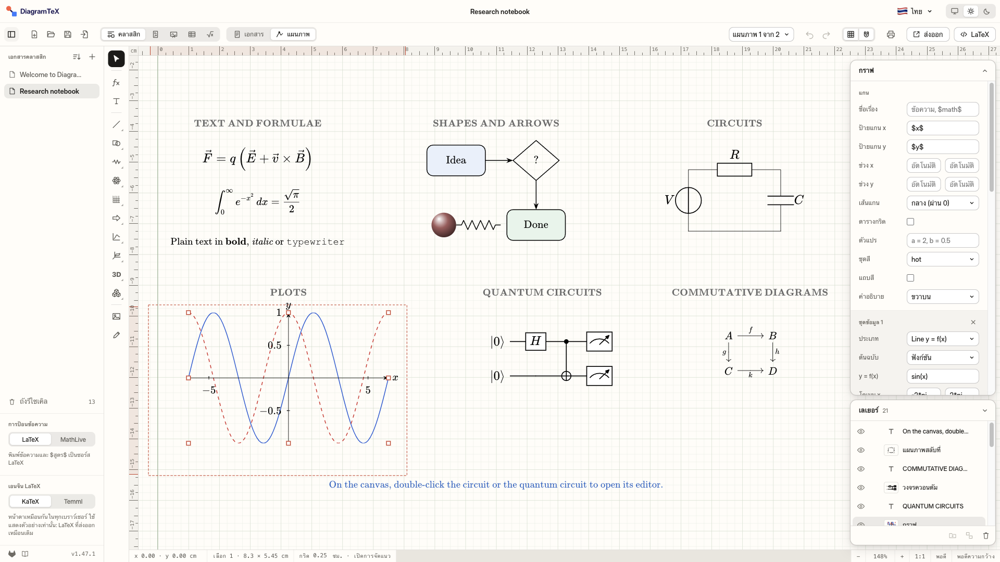
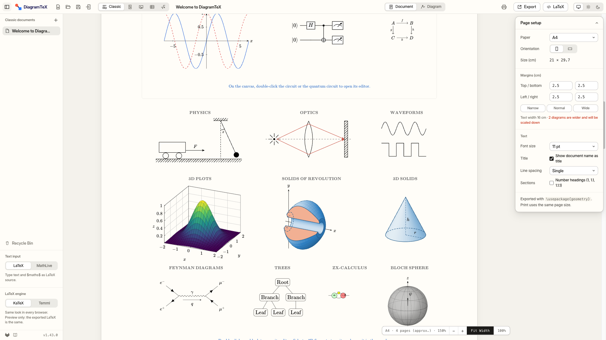

Contents
Draw it, then paste the LaTeX.
DiagramTeX is a diagram editor that writes TikZ. You draw with the mouse, type labels in LaTeX maths, and copy clean code into Overleaf or any LaTeX document. This guide covers everything it does, from the first line to a whole typeset document.
- Free and open source
- Works offline
- No account
- Nothing leaves your browser
Get started
- Pick a tool and draw. The rail on the left holds every tool; press L for a line, R for a rectangle, T for text.
- Type maths in labels. Anything between
$…$is LaTeX maths and renders as you type:$\vec F = m\vec a$. - Copy the TikZ. Press CtrlE to open the code. The comment at the top lists the packages it needs.
- Paste and compile. Put the code in your document, load the listed packages, and build with pdfLaTeX.
The first time you open DiagramTeX it shows a Welcome file: an introduction, two diagrams with one example of almost everything it can draw, and a short manual. Open any of its objects to see how it was made. A short welcome tour points out the left, top and right of the window: search for “Welcome Tour” (/) to open it. To keep DiagramTeX on your computer, use Install beside the language switcher when your browser offers it, or the browser's own install menu (Add to Home Screen in Safari); it then runs without a connection. Once installed, the same place offers Download TeX engine with its size: it keeps pdfLaTeX and XeLaTeX in the app, so Compile and printing or exporting a PDF through LaTeX work offline too, and goes once both are kept.
The window

Top bar
The first row has the logo on the left, the file name in the centre, and language and appearance on the right. The second row holds New, Open, Save and Import; the mode selector and adjacent Classic Document/Diagram views; undo and redo; grid and snap; Print, Export and LaTeX.
File list
Your files of the current kind. Right-click a file to rename, duplicate or delete it. The button at the far left folds the list away. Underneath: the text input mode and the maths engine.
Tool rail
Every tool. A button with a small corner triangle opens a flyout of related tools when you hover it.
Properties panel
Floats over the top right of the canvas. With nothing selected it sets the default style for new shapes and lists the shortcuts; click its heading to fold it.
Layers
Under the properties panel, top first. Click to select, drag to restack, the eye hides, the lock stops picking. Double-click a name to rename it.
Rulers and status bar
Centimetre rulers in TikZ coordinates (y up) show the selection in red. The status bar shows the cursor, the selection size, grid, snap and zoom, with 1:1, Fit and Fit Width.
1 cm in TikZ is 40 px on the canvas at 100%. Canvas y points down and TikZ y points up; the faint cross on the canvas marks the TikZ origin. The app follows your system's light or dark appearance, or the choice at the right end of the top bar. The drawing sheet stays light in both, so colours look as they will on paper.

Five modes
The top bar's main switch is Classic | Page | Whiteboard | Table | Quick. Each of the first three is its own kind of file; the sidebar lists only files of the current kind, and New makes one of that kind.
Classic
Diagrams plus a document that arranges them with text, as in Mathcha. A second switch, Document | Diagram, flips between writing and drawing.
Page
A free-form sheet of paper. Place text, maths, shapes, plots and images anywhere on A4 or Letter pages, and export a full article that keeps every position.
Whiteboard
One endless canvas with no edges. Scroll to move, pinch or Ctrl+scroll to zoom (3% to 800%), and H or Space-drag to grab the board.
Table
One table to make and take away: import cells from a spreadsheet, a CSV, Excel, Markdown, HTML or LaTeX, edit them in a grid, and copy clean booktabs LaTeX. See Tables.
Quick
One figure, without a file. Formula: type LaTeX, then Copy PNG (CtrlEnter) to paste it into slides or chats, or copy the SVG. Or pick a block from Quick's list to draw it in its own editor. Your open file stays open. See Quick.
Quick
- Formula: the preview updates as you type, in LaTeX or MathLive. Choose the size (Normal, Large, Huge), how sharp the PNG is (4× to 32×) and a transparent background. Copy PNG, Copy SVG, or download
formula.png/formula.svg. - Blocks: under Formula, Quick's list holds every block that has an editor (commutative diagrams, quantum and electrical circuits, trees, graphs, ZX, Feynman, timing, automata, UML, Karnaugh maps, bit fields, chemistry, 2D and 3D geometry, physics), each with the number of drafts it has. Pick one and its editor opens in place, with its drafts listed under it; the one open is filled in. Up to 24 drafts are kept per block. A new draft is only made when you press New.
- Drafts stay as you left them: go to another block and come back, and the draft reopens with the same zoom, selection and undo history. Zoom and selection also survive a reload; undo history lasts until you close the tab.
- Names: a draft is named after when it last changed. Double-click it, press F2 or right-click and choose Rename… to give it a name; clear the name to go back to the time. A named draft is never dropped to make room.
- Output: on the right of the editor's top bar. Copy TikZ copies the code. Export copies or downloads the drawing as PNG (choose its sharpness, and a transparent background) or SVG. Add to Document (or Diagram, Page, Whiteboard, after the mode your file was in) leaves Quick and adds the drawing to the file you had open, in the middle of the view.
- Right-click a draft in the list to open, rename, add to your file, duplicate or delete it, or a block to start a new one.
Drawing
Tools
- Select (V), Maths (M, a text object that starts in
$…$) and Text (T; drag for a paragraph box). - Lines: line, arrow, double arrow, elbow connector, curved connector, Bézier curve and curved arrow; then freeform: curve through points, curvature pen, polyline, smooth closed curve, arc by centre, arc through three points and spring. A line's Route in the panel makes it straight, an elbow (right angles; drag its middle handle to move the bend, or pull it out sideways from a straight run to make a U; it stays put when the shapes at its ends move, until one comes within 0.5 cm, and springs back when it moves away) or curved, and Direction sets whether it leaves and arrives sideways or up and down. Connector ends hold on to shapes. Any line draws with a drag, or with two clicks: start, then end (Esc cancels in between). Arc by centre (O): click the centre, the start, then the end; the arc follows the way you turn, either way and past 180°, and Shift snaps to 15°. Arc through three points: click both ends, then a point on the arc. Esc cancels. Afterwards the end handles set only the angles θ1 and θ2, the round handle halfway along sets the radius, the edge handles on its box stretch it into an elliptical arc (Shift makes it round again), and it rotates like any other shape. Click a polyline point to pick it, drag a + to add one, double-click to remove one.
- Curves through points are TikZ's own
plot[smooth], so the canvas and the PDF match; Tension in the panel sets how round they are (0 straight, 0.5 TikZ's default). The curvature pen works like Photoshop's: click points and the curve bends smoothly through them, double-click (or Alt-click) for a corner, click the first point to close it, Enter or Esc to leave it open. Afterwards drag its points, drag a + to add one, double-click a point to switch it between smooth and corner, and Delete removes the chosen point. - Shapes: rectangles (plain, rounded, snipped), 33 basic shapes and 28 flowchart symbols. Library symbols export as exact TikZ paths and can hold centred text.
- Rectangle and ellipse (R, E, first in the Shapes menu's basic shapes): rest the mouse on either button, or right-click it, to choose how it draws. Rectangle: corner to corner, from the centre, or three points (a corner, the next corner, then the other side: a turned rectangle). Ellipse: corner to corner, from the centre, a circle from its centre, a circle by two points (a diameter) or by three points. The choice is ticked, shown on the button and remembered. Each draws with a drag or with two clicks (the three-point ones with three). Shift keeps a box square; Esc cancels between clicks.
- Electrical: the circuit editor, common symbols (resistor, capacitor, sources, diode, transistor, logic gates, ground) and waveforms (sine, square, pulse, triangle, sawtooth, rectified, chopped…).
- Physics: at the top, computed figures for six domains (Mechanics, Optics, Fields, Waves, Spacetime, Energy levels; see Physics figures); below them, mechanics symbols (ground, wall, block, incline, cart, pulley, pendulum) and optics symbols (lenses, mirrors, prism, screen, slits, rays, source, eye).
- Misc: axes, wave, brace, ruler, grid, ball and dot; Arrows: 27 block arrows; Image (I) and Pencil (N, freehand, smoothed into Bézier curves).
Detailed shapes keep their detail size when you resize them: stretching a wave adds periods, a spring or coil adds loops, a ruler adds ticks. The panel holds the detail sizes (period, loop pitch, tick spacing, cell size).
Physics figures
A physics figure works out its own physics: move a lens and the rays and the image follow, steepen an incline and the forces and acceleration change. Pick a domain from the Physics menu, then click the canvas; the figure starts from an example. Double-click it, press Enter or use Edit Physics… to open the editor.
- Mechanics: blocks on inclines with friction, applied forces, Atwood machines, springs, pendulums, projectiles and linkages. Optics: rays through lenses, mirrors, prisms, slabs and interfaces, with images, polarisers, beam splitters and interferometers. Fields: field lines, equipotentials and null points of charges and currents. Waves: interference, slits and gratings, beats, standing waves. Spacetime: Minkowski diagrams with moving frames, light cones and intervals. Energy levels: levels, transitions and spectra.
- Editor: pick an object on the left, click the grid to place it (Esc when done). Drag handles: a square moves, a circle turns, a diamond sets a size or focal length; Alt turns snapping off. Arrows nudge, Tab walks the objects, Ctrl/⌘+D duplicates, Delete removes. The examples sit below the palette.
- Drawing: the main editor's tools sit below the physics objects: text and maths, lines and arrows, curves, polylines, the pencil, rectangles, ellipses, shapes, block arrows and symbols (no blocks or plots). They behave as on the main canvas. Drag on an empty spot to select with a marquee, Shift-click to add one; the selection moves, duplicates and deletes together. Space-drag or the middle button moves the view.
- Results: with nothing selected, the right side lists every computed value, each tagged exact, ideal (exact for a stated idealisation such as a thin lens), approx or schematic. Setups that cannot happen are shown as warnings.
- Source: one object per line, such as
\lens[f=2](3), live in both directions. Values take units (500nm,30deg,2kg). Lines it does not know are kept. This is DiagramTeX's own syntax, not LaTeX, so it won't compile on its own: Export or Copy TikZ Code gives the LaTeX, plain TikZ witharrows.meta.
Snapping and precision
- The grid is 0.25 cm. Shapes snap to it and to other shapes' points; hold Alt to place freely.
- Hold Shift to keep angles to 15° steps and to draw squares and circles.
- Arrow keys nudge the selection. The panel shows every coordinate in TikZ centimetres, ready to type.
- Rotate by hovering just outside the middle of any edge of the selection until the cursor turns, then drag (Shift for 15°). CtrlR turns 90°.
Arranging
- Right-click any object for copy (also as TikZ or as an image), cut, paste, duplicate, delete, group, Copy as Image and Save as Image (PNG on white, PNG with a transparent background, or SVG with its maths fonts), and the Combine, Arrange, Rotate, Align and Distribute menus. On a touch screen, hold a finger still on the object for half a second.
- Groups (CtrlG; add Shift to ungroup) select and align as one piece. Click a member of a selected group again to select just it, to move or copy it on its own.
- Combine two or more closed shapes: Unite, Intersect, Subtract, Exclude or Divide. The result is a Region, which can have holes, exported with
even odd rule. - Stacking: Ctrl] and Ctrl[ move forward and backward, or drag rows in Layers.
Style
- Colour with presets, alpha and “No colour”. Fill is a colour, a gradient (linear or radial, with draggable stops; exported as pgf shadings) or a pattern (lines, grid, crosshatch, bricks, dots; exported with
patterns.meta). - Lines: width, dash presets or a custom
on offpattern, 27 arrow tips, double, wavy and ticked shafts, opacity. - Shadow (rectangles, ellipses, closed polygons and curves, Combine regions, the closed basic shapes, flowchart symbols and block arrows, boxed text and images): turn it on, then set how far it falls (Shadow offset: right and down; below 0, up and left) and how dark it is (Shadow alpha). It falls down the page even when the object is rotated. Exported as TikZ's
drop shadow(shadowslibrary). - Images (a photo collage, say): Border puts a margin round the picture, white by default like a photo print, in Border colour; Stroke adds an outline round it, and Corner radius rounds the frame and the picture inside it. Add a shadow and a little rotation to each photo. The border is the
inner sepof the picture's node, and rounded pictures are clipped with\clip. - Text: font family (including the Thai fonts Garuda, Kinnari and Laksaman, which are for viewing in the app: the LaTeX keeps your document's font), bold and italic, size from
\tinyto\Hugeor a custom size, and a wrap width with left, centre, right or justified alignment. - With nothing selected, the panel sets the default style that new shapes start with.
- Named styles: select objects and choose New Style from Selection… in the Style row at the top of the panel to give their outline, fill, arrow tips, opacity and text a name, such as
block. Pick the style for other objects to link them. A linked object can still set anything differently: a dot marks each field that differs, and Reset to Style (the ⋯ button) drops those. Update "block" from This Object changes the style, and every object linked to it, in every diagram of the file, follows. The LaTeX defines each style once,\tikzset{block/.style={…}}, and writes\draw[block], or\draw[block, dashed]where an object differs. When that wouldn't draw exactly the same, the object's options are written out in full. The styles belong to the file; Detach from Style unlinks an object and Delete Style… removes a style, and the objects keep how they look. - Macros: a file can define its own commands, as a preamble does:
\newcommand{\R}{\mathbb{R}},\DeclareMathOperator{\Tr}{Tr},\DeclarePairedDelimiter\abs{\lvert}{\rvert},\defand\let. Open them with Macros… in the command search, or Edit Macros… in the Document's Page setup. Every formula in the file is drawn with them, and every export (TikZ, the Document's and the Page's LaTeX) defines them once in its preamble, with the packages they use. Importing LaTeX brings its preamble's macros into the file; a command the file already defines keeps the file's definition. An optional argument is read as LaTeX reads it, with its default when it is left out:\newcommand{\f}[2][x], and xparse's starred and optional arguments (\NewDocumentCommand\f{s o m}).\defwith delimited arguments (\def\pair#1,#2.{…}) works too, and so do tests on the arguments (ifthen's\ifthenelse{\equal{#1}{}}{…}{…},\isempty, etoolbox's\ifstremptyand\ifstrequal,\ifx&),\newrobustcmd,\newenvironment, mathtools'\DeclarePairedDelimiterXwith its*and size, and\leftand\rightredefined as mleftright's. A definition that uses an@command stays with its picture.
Text and maths
$…$is inline maths.$$…$$or\[…\]is display style (full-size fractions and limits), exported as$\displaystyle …$. Math style in the panel switches every formula in the selection at once.- Command suggestions: type
\and matching commands appear with a rendered preview, about 250 common ones first. ↑ ↓ to choose, Enter or Tab to insert, Esc to close. - Text input (left sidebar): LaTeX to type source, or MathLive to edit maths visually. Double-clicking a label edits it in the mode you chose.
- LaTeX engine (left sidebar) changes only the preview: KaTeX provides a fast LaTeX preview; Temml covers more LaTeX and looks closer to TeX. The exported code is the same.
- Labels on lines and curves use TikZ's
autoandswapplacement, so they sit where LaTeX puts them. - Commands from packages are drawn too: chemistry with
\ce{2H2 + O2 -> 2H2O}(mhchem), units with siunitx's\SI{9.8}{\metre\per\second\squared},\si,\qty,\numand\ang, physics'\qty(…),\abs,\dv, and its bra-kets\ev,\vev,\ketbraand\melwith their stars,\cancelto,\nicefrac,\tensor,\slashed,\prescript, upright Greek (\upmu),multlinedwith its first line at the left and its last at the right,\makebox[2em]{…}, and arrays with@{},>{…},<{…}orp{…}columns. Subscripts and superscripts are set in the 7pt and 5pt Computer Modern designs, as LaTeX sets them, so a formula is as wide as LaTeX's; the rows ofaligned,gatheredandmultlinedare as far apart as LaTeX sets them, with\\[…]gaps and the[t]and[b]positions, and\int\limitstakes the width LaTeX gives it. Every export loads the packages its formulas use; a command the file defines in its Macros needs no package. A$…$inside\text{…}is maths within the formula's text, as in LaTeX.
Maths inside LaTeX source fields is shown in green, so you can see at a glance which part is maths. In maths, typing (, [ or { adds its closing partner when nothing, a space or the closing $ follows the caret (or wraps the selected text in the pair); typing the closer steps over it, and Backspace between an empty pair removes both.
Plots and 3D
2D plots (pgfplots)
Click the plot button to place one, or drag out a box. Each plot holds several series, written as expressions such as sin(x)*exp(-x/4) or as data. Kinds: function, line, scatter, area, bar, contour, heatmap, and pie chart (one label value [#color] per line). A function series can also be an inequality (shaded, dashed edge when strict), a region between two curves, x in terms of y, parametric, polar, implicit F(x, y) = 0, points, vectors, a vector field or a phase portrait. Define variables once (a = 2, b = 0.5) and use them in every series. Axis labels, ranges, grid, legend, colour maps and a colour bar are in the panel; expression errors show both there and on the canvas.
A pgf-pie chart (\pie[…]{30/A, 70/B}) that is read in becomes a pie chart that keeps pgf-pie's look: slices counter-clockwise from the right, pgf-pie's colours, the numbers inside, and labels beside the slices, on pins, inside or in a legend. Its panel sets the labels, the sum (auto for the values' total), the rotation, how far slices are pulled out, the text before and after each number, hidden numbers and a polar area chart, and it is written back as \pie. A pie that uses what pgf-pie draws but the app doesn't (square, cloud, a command around the numbers, a legend after other drawing in the picture) stays as code.
2D geometry
2D Geometry, in the Blocks menu, is a plain TikZ figure for vectors and coordinate geometry: drag points, add vectors, projections such as (Q |- P), angle marks and plots, and measures that print their value and update when a point moves. See Blocks.
3D
The 3D menu has seven tools; each one's variants are chosen in its panel.
- 3D plots (pgfplots): surface
z = f(x, y)(or a mesh), parametric surface, space curve and 3D scatter, with pgfplots'view={az}{el}angles. - 3D figures in plain TikZ, for calculus: solid regions over an ellipse, rectangle, polar curve or polar rectangle (with Riemann columns), solids of revolution (disks, washers, shells, cut open, with a highlighted slice) and basic solids (box, cube, cylinder, cone, frustum, hollow cylinder, sphere, hemisphere, spherical cap, ellipsoid, torus, prism, hexagonal prism, pyramid, tetrahedron, octahedron and spherical wedge, picked from a grid of pictures). Hidden edges are dashed; lower a colour's alpha to see through.
3D Geometry (tikz-3dplot), a picture you turn by dragging, is in the Blocks menu, next to 2D Geometry. See Blocks.
Blocks
A block is a whole figure written in one LaTeX package, edited in its own editor. Add one from the Blocks menu (the cube on the tool rail), where they are grouped by subject: General, Maths, Quantum and physics, Electronics, Computing and Chemistry. Blocks are experimental, so check the compiled figure before you rely on it. Placing a block only selects it; double-click it, press Enter or use the Edit… button in the panel to open its editor. To draw one without a file, open it from Quick.

All editors work the same way:
- Palette on the left: click an item and click the grid, or drag it in. Single keys place the common items. On a narrower window the palette shrinks from three items a row to two, then one, to leave the drawing more room.
- Code on the right, live both ways. The code follows the drawing, and typing in it updates the drawing after a short pause. Parts you didn't touch keep the code you wrote,
%comments stay beside the line they were on whatever you change in the drawing (only deleting them in the code removes them), and commands the editor can't draw are kept and exported as written (it tells you which). - Right-click an item for its actions: insert, delete, reverse, bend, edit label. Double-click a label to edit it in place.
- Done (CtrlEnter) writes the block back and closes; CtrlS writes it back and keeps the editor open. Cancel or Esc asks before discarding changes.
Circuit circuitikz415 parts
- Parts come in searchable categories. Click a part and click the grid, or drag from start to end to set a two-terminal part's length.
- Wires (W) snap to pins and stay attached when parts move. Transistors, op amps and ICs are named for you (
Q1,U1), so wires export as(Q1.B). Click a wire to select one segment (drag it and the segments beside it stretch to stay joined); double-click to select the whole wire. Drag across empty space to select several: left to right takes what lies wholly inside, right to left anything the box touches. CtrlA selects everything. - The panel sets the label (maths welcome:
$R_1$), annotation, voltage and current arrows (pick which side each sits on and which way it points; the icons turn with the part), open and closed ends, rotation and mirroring. - Text (under Wires & nodes) puts a label anywhere, written as
\node at (x,y) {…}. - Code from other tools reads as parts too: options after
at, mirrored or scaled transistors (yscale=-1), a plainto,-- cycle, polar steps such as++(90:0.5),\draw[thick, red]and\tikzstylesettings. Lines it can't draw are kept as written. - An imported document's circuitikz options (
european,RPvoltages,siunitx…) become the circuit's own\ctikzsetsettings, and its labels take the document's size. Anchors such as(Q.base),(opamp.out |- A),anchor=,right=of U1, calc's$(a)!0.5!(b)$,coordinate (x)on a path andto[Tnpn]are placed where LaTeX puts them. In a picture that mixes parts with other TikZ, the parts become one Circuit and the rest ordinary objects; a piece of a path the circuit can't draw is kept as its own code. - Exported as a
scopewith\usepackage{circuitikz}; Copy circuitikz Code gives a standalone environment.

Quantum circuit quantikz
- The circuit is a grid of wires × steps. Keys place gates and step right: H X Y Z S T U, C control, O open control, + target, M meter.
- Drop on the dashed row or column to add a wire or step. Right-click a cell or a range to insert or delete wires and steps, or clear cells.
- A
{left open in the code swallows the rest of the circuit into one cell, as it would in LaTeX. The note under the code says so, and until it is closed that cell keeps the code as written, whatever you do in the drawing. - Controls link to the nearest gate in their step; drag the blue handle to link another wire. Drag a gate's top or bottom bar to span several wires, or its corner handle to set a minimum size.
- Drag an element to move it; drag from the empty part of a cell to select a range of cells.
- Double-click a gate, or a slice's or a group's label, to edit that label in place.
- The panel edits labels, spans, wire types (quantum, classical, bundle), slices and gate groups. To label a gate or several gates without a box, use Label above from the palette, or set a group's Border to None. The editor still outlines such a group with a dashed blue line so you can see what it covers; it isn't exported. Right-click a cell or a selected range for Group Selection, Label Above Selection and Delete Group. Group and Label above in the palette also wrap a selected range, or, chosen first, the cells you then drag across. Select any cell a group covers to edit that group in the panel (one section per group over the cell) and to show a bar on each of its edges; drag one to another wire or step to resize the group. A group's or a slice's label can sit at the Top, the Bottom or Both (with its own Bottom label), and a slice's From wire / To wire make it cross only some wires. Exported in
\begin{quantikz}with\usetikzlibrary{quantikz2}. - A circuit imported from a document that loads the old library (
\usetikzlibrary{quantikz}, quantikz 0.9.8) keeps it: it is drawn by that library's rules (a wire only where a command such as\qwdraws one,\qwbundle[alternate]as three wires) and exported with that library alone. Text in a cell (\cdots,\ket{0}) is drawn as the cell's content, andampersand replacement=\&is read.
Commutative diagram tikz-cd
- Select a cell and type its object, or drop one from the palette. Drag from cell to cell to draw an arrow in the palette's style (maps to, inclusion, onto, dashed, implies, equal, harpoon, squiggly…).
- The panel sets an arrow's label and side, head, line, crossing gap, bend and shift; Reverse swaps its ends.
- An arrow can carry several labels (one near the start, one near the end): Add Label adds one, the numbered buttons pick which one the fields edit, and Remove Label takes it off.
Commutative diagram xymatrix
- The CD editor, writing
\xymatrix{…}for thexypackage: arrows like\ar@{->>}[r]^{f}, curves@/^1pc/, shifts@<.5ex>, spacing@R=,@C=. - Drawn with xy's spacing and arrow tips, and exported as written with
\usepackage[all]{xy}. An empty entry takes xy's 6pt box. What xy's position language adds after an\ar(named labels and targets such as="1"and"1";"2", a label that is an object or a\hole,-<3pt,0pt>{}) isn't drawn: it is listed in the panel and kept in the code. - Convert to tikz-cd in the panel rewrites the block as a CD block, and Convert to xymatrix on a CD block goes the other way. Converting back before you edit restores your original code; anything the other package can't say is listed in a hint.
Tree forest
- For syntax trees, org charts, directory trees, decision and probability trees. Start from a template, then add, move and restyle nodes by keyboard or by dragging.
- Tree-direction buttons follow the tree's growth; the code is live beside it.
- Phantom: a phantom node keeps its place but isn't drawn. Use Phantom in the palette, the Show switch in the panel, or right-click and Make Phantom (Make Visible brings it back).
- tikz-qtree trees: a pasted or imported
\Tree [.S …]becomes a Tree, with tikz-qtree's spacing, edges and roofs written as forest options. Until you edit it, it exports as you wrote it. Code after it can use its named nodes (\node (a) {…};). If code kept as written uses those names, the tree stays as written too. - Code after the tree inside
\begin{forest}, a node'stikz={…}and anedge pathare drawn with the tree, and the tree uses the styles your preamble's\forestsetand\tikzsetdefine. - Drawn as forest places it: the tree honours
\usepackage[linguistics]{forest}and adefault preamble, everycalign(child edge, edge midpoint, fixed angles …),fit=band,landssetbefore computing xy,align=nodes of several lines,folder,shape=coordinate,insert before={[…]}, and conditions such aswhere={iseven(level())}{…}{…}.
Graph TikZ graphs
- For any graph of nodes and edges. Place nodes (circle, box, rounded, ellipse, diamond, point, text box) from the palette or double-click the grid; Shift-click or drag a box to select several and move, restyle, align or join them. Double-click a node or an edge to label it.
- Drag a selected node's blue handle to another node for an edge, onto itself for a loop, or onto empty grid for a new node. Drag an edge's middle handle to bend it; right-click to reverse it or change its ends.
- From text: paste an adjacency matrix, adjacency list, edge list, DOT, Mermaid, JSON or a TikZ
\graph, and the graph is drawn. Start from K₅, Petersen, trees, grids and more. - Auto layout: Spread Out, On a Circle, In Layers or On a Grid. Exported with
\usetikzlibrary{graphs}; builds with pdfLaTeX. - A
\graphwithout positions is drawn where TikZ places its nodes: chains and groups,growandbranch(withsep),clockwiseand circular placement, and the subgraphsI_n,K_n,C_nandP_nwithn,Vandname. Moving a node writes every node's place. A\graphthat only joins nodes the picture already has becomes those edges.
ZX diagram zx-calculus
- Drop Z and X spiders, Hadamard boxes, points and loops onto cells, or type Z X H N L.
- Drag a node's blue handle to another cell to wire them. Click a wire to choose its shape from pictures, add a marker, or make it classical, bold or dashed.
- The panel sets a spider's colour, phase (plain or a fraction) and where the phase goes.
- Imported circuits are drawn as zx-calculus draws them: gates (
\zxGate,\zxBox,\zxGateMulti, with a meter or a label), controls, NOT, swap crosses, inputs and outputs, and\zxMatrixboxes; a wire withto=orfrom=reaches the node named witha=. Slices, braces, ground and dividers stay in the code and are named in the panel.
Feynman diagram tikz-feynman
- Place vertices (dot, blob, crossed dot, particle) on a centimetre grid; drag the blue handle from one vertex to another to draw a propagator: fermion, photon, gluon, scalar, ghost, Majorana, boson and more (keys F P G S M B L).
- A line has a label, a momentum arrow, a bend or half circle and an insertion; right-click to reverse it.
- Exported with
\usepackage[compat=1.1.0]{tikz-feynman}and builds with pdfLaTeX, because every vertex has a position. - Imported diagrams are drawn as pdfLaTeX draws them:
\feynmandiagramand\diagramwithout the star put each chain in a row and each new vertex 1 cm along (the automatic layouts need LuaLaTeX); a\vertexwith no place is at the origin;right=of …, the picture's scale,smallandlarge, loops and\node,\coordinateand calc positions in the environment come in as written, and its\drawlines become the picture's own.
2D geometry TikZ
- The 3D geometry editor seen straight on: drag across empty space to select (left to right takes what lies wholly inside, right to left anything the box touches; Shift adds), hold Space and drag or use the arrow keys to move the view, drag a point to move it (Alt places it off the 0.05 grid). A point at (angle:radius) keeps that form.
- Drag a circle by its rim or its centre to move it. Hovering the rim shows a small square at its top right: drag that to change the radius (Alt sizes it freely). A number, a length in cm or mm, or the value the radius names is rewritten; a radius worked out in the code has no square.
- Drag a line, an edge or the inside of a shape to move the whole object: a polygon, a segment, a vector (a circle moves by its rim, not its inside). Every point it uses moves by the same step (snapped to 0.05; Alt moves it freely), so a named point such as
(P)moves where it is defined and anything else built on it follows. A path through computed points (a projection, a calc expression, a loop or a plot) and the grid stay put. - Hold Shift while dragging a point to snap it to whichever is nearer: a whole-number point, or (for the end of a line) a multiple of 15° from the point it joins. Alt with Shift keeps only the angle.
- Press CtrlA to select everything. Drag any of it to move it all together, the grid included; ⌫ deletes it all and Esc or a click on empty space clears the selection.
- Add axes, a grid, points by (x, y) or (r, θ), labels, segments, vectors, projections, polygons, circles, angle and right-angle marks (pick one, then click inside a corner where two lines meet; select a mark to drag its square to size it and its label in or out), and plots y = f(x), polar and parametric (keys A G P T S V C M F).
- ⌘C / ⌘X copy or cut the selected commands as TikZ, and ⌘V pastes them, offset a little, with clashing point names renamed.
- Measures (Δx, Δy, length, angle): select a segment between two points, then pick one. The value is computed in the code and printed with
\pgfmathprintnumber, so it follows the points. - The panel gives each value set to a number a slider. Exported as written, with the
anglesandquoteslibraries when it uses angle marks.
3D geometry tikz-3dplot
- Drag empty space to turn the view; arrow keys turn it by 5° (Shift 15°). Drag a point to move it level; hold Shift to move it up and down.
- Add axes, rotated frames, points by (x, y, z) or (r, θ, φ), vectors, segments, projections, planes ax + by + cz = d, surfaces, triangles, circles, spheres, boxes, curves and angle arcs (keys A R P T V S L C B).
- The code is the figure:
\foreachloops,\defvalues and scopes are read and drawn. Moving a point defined by\defvalues writes the new values there.
Timing diagram tikz-timing
- Pick a value (High, Low, High-Z, Unknown, Data, Clock, Toggle, Metastable, Glitch, Gap, Hatched; keys H L Z X D U C T M G S W) and drag along a row to paint it, or click where it starts, point to where it ends and click again. The row shows the result as you go; click twice on a segment to paint just that one, and Esc drops a paint not yet placed.
- You can also drag any item from the palette onto the drawing: a value onto a segment, a row between rows, an arrow onto an edge. It shows where it lands as you move.
- Drag over empty space to select several segments (left to right takes those wholly inside, right to left any the box touches), click one and Shift-click another, or press CtrlA for all of them. A value then paints them all, Delete removes them, and the panel sets their value or width together.
- Drag an edge to move a transition; with Shift the rest of the row moves too. Data cells can be filled in a colour or hatched.
- Interval and Delay draw labelled arrows between edges (setup, hold, clock-to-output); Break (B) puts
//marks across every row. - Text you type is escaped so it can't break the table; write
$x_1$for a subscript. - An imported table is drawn at the size its options give it (
scale,timing/xunit,font,timing/rowdist=3ex,timing/wscaleand the like), blank rows included, and its extra code's nodes,\foreachloops,\tablerulesand\tableheaderare drawn, inside layers and scopes too. The timing styles a document's preamble sets with\tikzsetand its macros (\def,\newcommand) are used as LaTeX uses them. The editor shows it in the package's standard size.
State machine TikZ automata
- Place states (State, Initial, Final, Both); drag a state's blue handle to another state for a transition, or back onto itself for a loop. I, A and L toggle initial, accepting and add a loop.
- Auto layout places every state in layers or on a circle, bending transitions just enough to clear other states.
UML class diagram pgf-umlcd

- Blocks → UML adds a class diagram (an abstract Shape with two subclasses to start from). Double-click it or press Enter to edit.
- Elements: class, interface, abstract class, static class, object and note. Click the grid, drag from the palette, or drag a box's knob onto empty grid for a linked one. Double-click a name to rename it (every reference follows), or an attribute or operation to edit it in place. Drag a line's label along it or to either side.
- Relations: inheritance, implementation, association, unidirectional association, aggregation, composition, dependency and note link. Drag from a box's knob to another box; the relation picked in the palette is the kind it gets. The panel sets role names and multiplicities, reverses or changes the kind.
- Boxes are measured as the package draws them. Hand-written routed
\drawlines are drawn as TikZ draws them and follow their classes. Exported with\usepackage{pgf-umlcd}; Import LaTeX/TikZ reads pgf-umlcd classes back.
UML sequence diagram pgf-umlsd
- Blocks → Sequence adds a sequence diagram (a client thread calling a server, which queries a database).
- Lifelines: instances (I, passive until called) and threads (T, active from the start). Drag an instance sideways to reorder.
- Messages: call (with a return), self call, message and call without a return (keys C S M A). Drag from one lifeline to another; a message drawn inside an activation nests inside that call. The panel sets its text, return value, length or delay.
- Blocks: B frames the selected message with a caption and comment. ⌥↑ / ↓ move a message among its neighbours.
- Drawn as the package draws it (activation bars, shadows,
\prelevel,\unitfactor) and exported with\usepackage{pgf-umlsd}. A message's text names nodes, so commands and round brackets in it don't compile; the panel warns. Import LaTeX/TikZ reads asequencediagramback.
Karnaugh map karnaugh-map2 to 6 variables
- Click a cell to step it through 0, 1 and don't care, or paint with 1 0 D E. Rows and columns are in Gray code.
- Drag across cells to group them; past an edge, a group wraps round. The panel checks each group, writes out the simplified function, and Find Groups finds a smallest cover.
Bit field bytefieldpacket and register layouts
- Starts from an IPv4-style header. The palette adds a Bit box (B), Word box (W), single Bits (I), Skipped words (K) and a bit Header (H).
- Drag a field's right edge to move the line between it and the next (it snaps to bits); drag a word box's bottom to change its height. S splits a field, M and ShiftM merge it with the next or previous one, and double-click or Enter edits its label.
- Selecting: drag from a field across others, Shift-click a second field, or Shift and an arrow key, to select every field in between; CtrlA selects them all. Then R or L puts a labelled brace round their rows, and Delete removes them (whole rows if every field of them is selected) in one undo step. Drag a brace's end handle to change which rows it covers.
- The panel sets a field's borders, fill colour (
bgcolor) and formatting, and the whole field's width, bit size and endianness. The canvas follows the package's own measurements, and code you didn't touch is kept as written.
Chemistry chemfig
- Pick an atom and drag its blue handle to grow a bond (snaps to 15°). Type C H N O… to relabel it, or double-click to type any label such as
NH_2. Double-click a bond to step it single, double, triple. - The palette adds rings (benzene, aromatic, 3 to 7 sides, fused onto a picked side), groups (OH, COOH, NO₂…), charges and lone pairs; drag an item onto an atom or bond. The panel sets an atom's lone pairs (dots or bars) and radicals, an atom's colour (each atom wrapped in
\textcolor, kept apart with|so chemfig still splits them), a partial charge (δ+ or δ−) with its position and distance, placed clear of the atom (chemfig centres a charge on the atom's edge, so it is written with a distance such as90:4pt=$\delta+$), and a bond's look. A single, double or triple bond has a line (solid, dashed, dotted, or none: not drawn but kept in place), a width and a colour; a wedge has a colour, and the wedge sizes of its molecule (\chemfig[cram width=…]), since chemfig sizes wedges per molecule or drawing, not per bond. A bond's own settings win over All bonds, as in chemfig; Solid under a dashedbond stylewritessolid; for a bond into a group such asCH_2OH, Leaves from and Arrives at choose which of its atoms it joins. Right-click for bond types, Hide Bond / Show Bond and deleting an atom, bond, ring, molecule or arrow. - Reactions: an arrow turns the drawing into a
\schemestart … \schemestopscheme with a copy of the molecule to change into the product. Drag an arrow's head to turn and stretch it. An arrow with nothing after it ends in a dashed box: click it to type the next compound in chemfig code (such asCH_3-COOH), or drop an atom, ring or group in it. Merge joins two compounds into a new one; a picked molecule can be put in brackets or grouped with the next step into a\subscheme. - Settings: with nothing picked, the panel sets the whole drawing (
\setchemfig): bond length, double bond gap, wedge width, angle step, fixed length, the width and gap of hashed wedges, square hashes (cram rectangle) and the size of ring circles; a width, colour and line for All bonds (bond style; a bond's own options win); and, in a scheme, the spacing of compounds, arrows and names, the arrow head (chemfig's, Stealth, LaTeX or open) and a colour and line for every arrow. A picked arrow has its own colour and line; a picked ring side sets the ring's circle (on or off, its arc, colour and line). chemfig 1.x code (the setters chemfig 1.4 removed, such as\setatomsep,\setcrambond,\setarrowdefaultor\enablebondjoin, and\chemfig*or\chemfig[…][…]), which current chemfig stops on, is drawn, and comes in today's form: when you paste or import it, and when you open it in the editor (a note says what changed; Undo or Cancel keeps the old code).\setandsign's spacing is written onto each\+.\resetchemfig,\setchargeand\resetchargeare drawn too, as are a molecule's own settings,\chemfig[atom sep=2em]{…}. Lengths take a unit, such as2.5em; clearing a field goes back to chemfig's default. - Names: a dashed box sits under each compound without a name; click it to type the name in place, or double-click a name to change it (ShiftEnter for a second line). It is written as
\chemname; the panel's Name field under Compound does the same, and emptying it takes the name away. - Curved arrow: click the atom or bond it starts from, then the one it goes to; the ends get
@{name}s and a\chemmoveis written. Drag its blue handles to bend it; the panel sets tips, line and colour. ⌫ deletes it. - Drawn by chemfig's own rules, so the canvas matches the PDF.
- Pasted code can use submolecules (
\definesubmol, with arguments),\setchemfig, curved electron-pushing arrows (@{name}and\chemmove) and\hreac … \endhreac: all are drawn. Atoms that come from a submolecule are changed in its\definesubmolline. - An imported document's preamble settings (
\setchemfig,\definesubmol,\setchargeand the\tikzsetstyles the code names) come in at the head of each chemistry block, and a document that is only chemfig code, a scheme of plain-text compounds or code with TikZ inside\chemmove, comes in as the block. Also drawn as chemfig draws them:atom style={scale=…}andchemfig style={scale=…, line width=…}, acompound styleframe, snake, dash-pattern, see-through and shortened bonds,\polymerdelim's brackets, and\chemmovepaths that are filled, closed with-- cycleor have shifted points.
Chemistry Laboratory tikz-chemlab
- Laboratory apparatus, written for
tikz-chemlab(the TikZ version of pst-labo). The palette has glassware (test tube, round flask, beaker, Erlenmeyer flask, reagent bottle, volumetric flask, watch glass, graduated cylinder, a small one and one with liquid, funnel, separatory funnel, pipette, inverted tube, reflux flask), whole set-ups (a test tube or flask heated over a Bunsen burner, gas collected over water, reflux, titration, distillation and the package's fractional distillation picture), equipment (Bunsen burner, with gauze or as a flame alone, stand, hot plate, magnetic stirrer, stir bar, pH meter, crystallising dish, heating bath, thermometer, fractionating column, Liebig and ball condensers, test tube rack, a drop) and labels with leader lines. Folded below them are the parts the package builds its apparatus from (glass bodies, rims, scales, taps, the burette's pieces), the fittings on their own (stoppers, clamp, tubes) and the contents (bubbles, beads, filings … scattered as in a glass, and one piece of each solid); they stay open once opened. Click an item, then click the grid where its base goes, or drag it in. Every macro tikz-chemlab draws is here, except\tkzLargePipetteand its body, which draw one wall 23cm tall (the package's port of pst-labo's big pipette was never finished); written by hand, they are read and drawn as pdflatex draws them. - Drag a piece to move it (Alt turns snapping off), or nudge it with the arrow keys. A moved call gets a scope with a
shiftof its own; a scope that already leads with shifts has them written as one. Positions are in the picture's own units (itsscaleundone), from the cross at its origin. - tikz-chemlab has no scale for one piece (
\tkzTestTube[scale=0.5]stops pdflatex), so a piece's Scale is written on the scope round it (\begin{scope}[shift={(3,0)}, scale=0.5]): it grows or shrinks about its origin, line widths too, and nothing else moves. A call with no scope gets one; clearing the scale takes that scope away again. A group has a Scale of its own; with nothing selected, Scale sizes the whole picture. - A selected test tube, round flask or graduated cylinder has a round handle past its top: drag it round to tilt the glass about its foot (in 5° steps; Alt for single degrees). As in the package, a test tube's liquid stays level as it tilts, while a flask's and a cylinder's tilt with the glass. Each liquid it draws has a bar where its surface meets the glass's axis: drag it up or down to set that level (in steps of five; Alt for single steps), as do a separatory funnel's two layers, a titration's burette and a pipette's reagent.
- The panel sets what the package lets you set: the glass, up to three liquids (level and style: cyan, Champagne, Blood, Oil, the aqueous and organic phases, the diffusions …), tilt, a stopper or tube on top (straight, bent, U-tube, delivery tube, reflux condenser; on a funnel, on the test tube under it), a clamp, a tag with text, what is in the glass (bubbles, filaments, beads, copper turnings, iron filings, zinc granules) and, for each set-up, its burner, burette, pH meter, stirrer or gas jar. With nothing picked, it sets the picture's scale, its line widths (a preset,
\chemlabset{style=…}, and the outlines, rims, tube mouths and graduations one by one: a length orthin,semithick,thick,very thickorultra thick, the only words the package knows) and the flame of the burner with a gauze (\tkzHeatFlask,\tkzBunsenBurnerGrill: its size and the base and tip colours of its outer and inner parts; the plain burner under\tkzHeatTubekeeps the package's flame), all written in one\chemlabsetat the top. \tkzTitration,\tkzHeatFlaskand\tkzRoundFlaskset themselves beside the one of their kind written before them, and keep its settings. When you add, move, delete or reorder something, the others are shifted back, so nothing moves that you didn't move.- Drawn as pdflatex draws it, statement by statement from the package, so the picture is the size the PDF makes it. Bubbles and turnings are scattered at random, in the PDF too, so they never fall in quite the same places. Options the package doesn't have (pdflatex stops at them), an unknown glass or liquid style and code the drawing doesn't read are listed. A liquid style of your own, defined in the picture's options (
MyStyle/.style={fill=orange}), is drawn. - Exported with
\usepackage{tikz-chemlab}as a scope moved to where the block sits. Import LaTeX/TikZ reads a picture of apparatus back as a block, and a call pasted on its own (\tkzTestTube[…]) comes in as one.
Bloch sphere blochsphere
- Set the radius, tilt and rotation, the ball style (shaded, outline, none) and colours in the panel, and list states by their label, θ and φ.
- The code below is editable too; commands the panel doesn't cover are kept.
Tables
Choose Table in the mode switch. It is not a kind of file: it is one table to make and take away, and the file you had open stays open.

- Import: paste cells copied from Excel, Google Sheets or Numbers (CtrlV anywhere in Table), drop or open a CSV, TSV, Excel (
.xlsx), Markdown, HTML or LaTeX file, or paste their text. A LaTeXtabular,tabularxorlongtablewith\multicolumn,\multirow, colours,\rowcolorsstripes, double rules,m{}/b{}columns,\newcolumntype, rule width and colour, row spacing, placement and a longtable's head and foot rows, and siunitxScolumns reads back as it was. Merged cells, bold, italic, colours, fills, borders and alignment come along;$…$stays maths, while$5 and $10stays money. Paste a whole page and the table is taken out of it. - Edit in a grid like a spreadsheet: arrows, Tab and Enter move (Tab past a row's end leaves the grid), Shift extends the range, type to replace a cell, Enter, F2 or double-click to edit it. The bar above the grid edits the active cell's LaTeX. Right-click for inserting, deleting and moving rows and columns, merging, splitting and header rows. Drag a column header's right edge to set a width (it wraps as
p{…}). Pasting cells puts their top-left at the active cell and grows the table; only Import replaces it all. Cells may be edited as LaTeX or in MathLive, as set under Text input. - Format from the toolbar and the panel: style (Academic with booktabs rules, Minimal, Grid, Striped, Plain), header rows, column alignment and width, decimal alignment, scientific notation, uncertainties, a siunitx unit after the header, cell colours and size, and the caption, label, float and placement.
- Take it away: the pane under the grid shows the preview or the LaTeX with the packages it needs. Copy LaTeX (CtrlShiftC), .tex (compiles on its own), SVG (maths fonts embedded), PNG at 150, 300 or 600 DPI, or Copy PNG.
- The table stays in the browser until the next import; it is not saved in files.
- In a diagram: Blocks → Table adds a Table block, and cells pasted from a spreadsheet, a Markdown table, a dropped
.csvor.xlsx, or a pastedtabularbecome one. Double-click it to edit it here: Done (CtrlS to keep going) puts it back in the diagram, Cancel drops the changes, and the workspace's own table is left as it was. It is exported as atabularin a TikZ node, so it has no caption or float.
Documents and pages

Classic documents
- A Classic file is a document of text blocks and diagram blocks. Text blocks take
# Heading,$inline$maths, display maths as$$…$$,\[…\]or an amsmath environment (equation,align,gather…),\textbf{}and\emph{}. A display is one piece: click it to edit the formula, and it is written back the way you typed it. - Text is edited in place, as it looks on the page. Type
$x^2$and the formula appears as you close it; click a formula to edit it. Start a line with#,-,1.or[ ]for a section, bullet, numbered item or checkbox. While you edit, a toolbar at the top sets the paragraph style, bold, italic, colour, highlight, links, lists and alignment;</>shows the LaTeX source. - Undo and redo (the top bar's buttons, or CtrlZ) work on the whole page: typing, adding, moving and deleting blocks, and the page setup. Diagrams keep their own undo.
- Double-click a diagram block, or press Edit, to draw it on the canvas. In Diagram view, the selector in the top bar picks between diagrams.
- Page setup (right panel): paper (A4, A5, B5, US Letter, US Legal or custom), orientation, margins, font and font size, title and the author under it, line spacing and numbered sections. The preview marks approximate page breaks.
- Font: Computer Modern (LaTeX's own), Latin Modern, Times, Palatino or Helvetica (the TeX Gyre fonts, with matching maths), or the Thai fonts Kinnari, Garuda and Laksaman. The page shows it, and the LaTeX sets it for the engine: Type 1 packages for pdfLaTeX,
fontspecfor XeLaTeX. An object with a font of its own keeps it. Thai is set with either engine, from the TLWG fonts, and lines break between Thai words; Thai text in a Latin font is set in Kinnari, and text in a Thai font keeps it. A Thai document font with pdfLaTeX sets only the Thai in it and the rest in Computer Modern; XeLaTeX sets all of it. - Diagrams wider than the text are scaled down to fit, on screen and in the export (
\resizebox{\linewidth}{!}{…}).
Page mode
- Place anything anywhere on the paper. Margins are blue dashed guides; corners, margins and centre lines are snap points.
- Several pages stack down the canvas. With nothing selected, the panel lists every page to reorder, duplicate, insert or delete; an object belongs to the page under its centre and moves with it. PgUp / PgDn move between pages.
- The LaTeX export draws each page in one
tikzpicture, set at the paper's top-left corner witheso-pic, so positions are exact after a single run.
Getting LaTeX out
| Command | What you get |
|---|---|
| LaTeX CtrlE | The code dialog, to copy or download. Pick a tikzpicture snippet or a standalone document, for everything or only the selection (the header comment lists the packages and libraries to load), or the whole document. |
| Compile | In the LaTeX dialog: compiles the code with pdfLaTeX or XeLaTeX (TeX Live; pick the engine beside the code's scope, which also writes the code for it) in your browser and shows the PDF beside it, or marks TeX's errors on their lines. The dialog starts on XeLaTeX when the file's font or text is Thai. Nothing is sent anywhere. The first compile with an engine downloads it (pdfLaTeX about 26 MB, XeLaTeX more, with its OpenType fonts), which the browser keeps for offline use (the T1 text fonts, which few documents use, are fetched one by one when a document first needs one); the button's tooltip gives the size, or says why this browser can't run it (it needs WebAssembly). It has the packages the app's own LaTeX uses; a package it lacks is named. |
| Whole document CtrlShiftE | Downloads the whole document at once as an article with geometry page settings and each diagram in a tikzpicture. Importing it again brings back lines, shapes and text; plots, most blocks and library symbols come back as TikZ code (the LaTeX window says when that applies). To keep editing, keep the .diagramtex file. |
| Export | PNG at any DPI from 24 to 2400 (written into the file, so it opens at true size, optionally transparent), SVG (vector, maths fonts embedded) or PDF (vector with selectable text, through the print window; turn on Flatten for pages as pictures at a DPI you choose, 300 by default, saved directly). In Document view: PDF of the document (vector, through the print window) or Web page. For PDF, Render picks As shown (what you see, as above) or pdfLaTeX / XeLaTeX: the file's LaTeX compiled in your browser and saved as the PDF LaTeX makes. It starts on As shown each time. |
| Print CtrlP | Pages at true size; choose Save as PDF for a vector PDF. Where the LaTeX engine runs, Print asks each time how to render, in the dropdown beside Cancel and Print: As shown, or with pdfLaTeX or XeLaTeX (the file's LaTeX compiled here, and that PDF printed). For a file with Thai, choosing pdfLaTeX (here or in Export) shows a red warning that XeLaTeX sets Thai best. |
| Download .zip | In the LaTeX dialog, when the code uses pictures: the .tex and every picture it names, ready to compile or upload to Overleaf. SVGs go in with \includesvg (needs Inkscape and shell escape, which Overleaf has); the arrow beside the button offers SVG as PDF, no Inkscape, which adds a vector PDF of each SVG so plain pdfLaTeX compiles it. |
| Right-click → Copy TikZ | Just the selected objects' code, straight to the clipboard. |
Save to (Chrome, Edge and other Chromium browsers): choose a folder for a file's exports once, such as your paper's figures/ folder, and every later export overwrites its copy there.
A typical snippet looks like this:
% Requires: \usepackage{tikz} \usetikzlibrary{arrows.meta}
\begin{tikzpicture}[x=1cm, y=1cm]
\draw[line width=0.71pt, -{Stealth}] (0,0) -- (3,0) node[midway, above] {$\vec v$};
\draw[line width=0.71pt] (4,0) circle (0.5);
\end{tikzpicture}Packages by block: TikZ always; circuitikz, pgfplots, tikz-cd, xy, the quantikz2 library, forest, the graphs library, zx-calculus, tikz-feynman, tikz-3dplot, tikz-timing, the automata library, pgf-umlcd, pgf-umlsd, karnaugh-map, bytefield, chemfig, tikz-chemlab and blochsphere as used. All of them are in TeX Live and on Overleaf.
quantikz2 restyles every tikz-cd diagram in the same document. When a quantum circuit shares a figure with a commutative or ZX diagram, the export adds a few preamble lines that keep those diagrams as they look on their own.
Bringing TikZ in
Paste and drop from anywhere: CtrlV or drag in a picture (PNG, JPEG, SVG; GIF and WebP go in as PNG), a .tex file, TikZ code, a block's environment (quantikz, tikzcd, \chemfig{…}, \tkzTestTube[…], forest…), a formula or symbol (\alpha, x^2) or plain text. Each becomes what it is; a dropped one lands where you drop it, and in the Document view each becomes a block. Shapes copied in another DiagramTeX window paste back as shapes.
Import LaTeX/TikZ (top bar) takes pasted code or a .tex file and turns it into objects you can edit.
- Commands:
\draw,\fill,\filldraw,\node,\coordinate. - Paths:
--,..controls..,|-,rectangle,circle,ellipse,arc,to[bend],gridand inline nodes. - Options: colours (including
red!50), widths, dashes, line caps and joins, arrows,scale, polar and relative coordinates;rotate,shift,xshift,yshifton paths, nodes and nested scopes. ZX,feynman,tikztimingtableandbytefieldenvironments come back as blocks you can edit. Document text becomes text blocks, itsitemizeandenumeratelists (checklists too) the blocks' own lists, and\documentclassandgeometryoptions become the page setup, as do\authorand numbered\sections. A figure's\captionbecomes a centred line under its diagram.- The switch on its own row under the dialog's head chooses what TikZ code that can't be read exactly becomes. As Written keeps it as code, exported unchanged and drawn in a dashed frame. Editable Shapes turns it into ordinary shapes you can edit, exported from the shapes, so some details may change.
- Code kept as written is drawn by pdfLaTeX once the LaTeX engine is in your browser (after a first Compile, Print with LaTeX or Download TeX engine), or when you press Draw with pdfLaTeX in its panel: the canvas shows the picture LaTeX makes, in place of an approximation. A statement in a larger picture is compiled with the rest of the picture, so the names it uses are there, and only its own drawing is shown. A picture that uses a package with a block of its own (circuits, tikz-cd, trees, plots, automata, 3D, geometry …) is drawn by DiagramTeX instead, all of it, so it can be improved into editable objects. A statement TeX can't compile doesn't stop the rest of its picture from being drawn, and its panel names the command TeX didn't know. The drawings are kept in your browser, so a file opens with them at once; the exported LaTeX is unchanged.
- Insert into Diagram adds each picture as one group in the middle of the canvas, or, in the Document view, as a new diagram after the active one (⌘V there does the same); Import as New Document opens it in a new file.
- A
tkz-euclidepicture is read as the TikZ its commands stand for. Its points (\tkzDefPoint, in the\tkzInitframe) become named points the rest of the picture can use; its constructions (intersections, projections, rotations, midpoints, circumcentres, regular polygons …) put their points where tkz-euclide does; and its segments, lines, polygons, circles, arcs, points, labels, angle and segment marks, grids, axes and clips become ordinary shapes with tkz-euclide's look (0.2pt lines with round ends, grey circles). A command or option it can't draw exactly stays as code. - A hand-written
axisbecomes a plot. TikZ drawing inside it (\draw,\node,\fillataxis cs,rel axis csor, fromcompat=1.11, plain points) is kept with the plot, drawn where pgfplots puts it, cut at the axis box, and written back inside the axis. The axis also takes\pgfplotssetsizes and styles, widths in\textwidth,axis equal,hide axis,symbolic x coordsand empty axes as pgfplots draws them; agroupplotandfill betweenare drawn as pgfplots draws them and stay as code. A baretikzcdenvironment is not read: paste it into a tikz-cd block's code instead. LaTeX DiagramTeX exported comes back as lines, shapes and text where it can, the rest as TikZ code; older exports with a% diagramtex-data:comment come back exactly.
Files and saving
Drop one or more .diagramtex files anywhere in the app to open them in their saved modes. Backup bundles work too. Your current file stays in the file list; dropped project contents are not inserted into its canvas.

- Autosave: every change is saved in your browser (IndexedDB) as you work. Nothing is uploaded. A dot and a line beside the logo say where the open file is kept: green, its changes are saved to its file on disk; yellow, autosaved in the browser only, not yet saved to disk (with the shortcut that saves it, or the name of its file); blue, autosaved in the browser, which can't save to disk as you go (Safari, Firefox); red, autosave is unavailable or failed. A long file name is shortened in the middle; hover the line to read all of it. A block editor's edits join the document when you press Done (or ⌘S); reloading or closing the tab before that makes the browser ask first. The same file open in two tabs stays one file: what you change in one shows in the other, and changes made in both at once are put together (where both changed the same thing, the tab saving last keeps its version).
- Save (CtrlShiftS) writes a
.diagramtexfile (JSON inside); Open (CtrlO) loads it back in the right mode. A block made by a newer version shows as a note and is kept as it is when you save. - Export All Files… (right-click the empty part of the file list) saves every Pages, Classic and Whiteboard file into one
.diagramtexbundle. Opening the bundle puts each file back in its own kind, skips ones already here unchanged, and adds “copy” to names that are taken. - Linked files (Chromium browsers): after the first Save, the file stays linked, so CtrlS writes straight to it, and every change is written to it a second after you stop. A yellow dot means changes not yet saved to it; closing or reloading the tab while any linked file has changes not saved to it makes the browser ask first. Safari and Firefox download a copy each time instead.
- The installed app can open
.diagramtex,.texand.tikzfiles from Finder or Explorer (Open With). - Sorting: the sort button beside + at the top of the file list sorts by Custom order (your own; drag files up and down to rearrange them), Date created, Date modified or Name, each either way round. While the list is sorted, dragging only moves files into or out of folders.
- Folders: put a slash in a name to file it in a folder, as in cloud storage:
Physics/Lab 1is listed as Lab 1 inside Physics. Drag a file onto a folder to move it there, or onto the empty part of the list to take it out. Right-click a folder to add a file or folder to it, rename it, fold it or delete it. - Undo deletes: CtrlZ brings a deleted file or folder straight back from the Recycle Bin. Undo history is kept per file, so switching files doesn't lose it. A file made or opened after the delete has nothing to undo or redo.
- Version History: while you edit, the browser keeps earlier states of the file on its own: at most one every 10 minutes, the newest 3, plus one more every 5 minutes in between. A copy is also kept just before an import into the file, before a restore, and before changes from another tab are merged into yours. Save Version… (right-click a file, or search "Version") keeps the file as it is now under a name, such as "Before review", until you delete it. Right-click a file and choose Version History… to see each copy, how it differs from the file now, and how much space it takes; restore one in place of the file, open it as a new file, name it to keep it, or delete it. The same dialog sets how often copies are kept and how many, and shows how much of the browser's storage DiagramTeX uses.
- Recycle Bin: deleting a file or a folder moves it to the Recycle Bin under the file list. Open it to restore something or delete it for good. Anything left there for 30 days is removed automatically.
- Share links: right-click a file and choose Copy Share Link. A small file is packed into the link itself (after the
#, so it is never sent to a server); opening the link gives the other person their own copy. A file too large for a link has to be sent as a.diagramtexfile instead.
Browser storage can be cleared by the browser or by you. Keep a .diagramtex copy of anything you care about.
How close to LaTeX
The canvas is drawn with each package's own geometry, so what you see is what pdflatex makes: across the test figures, 99.5 % of the ink lands within half a millimetre. The main differences you may notice:
- Fonts: the preview uses KaTeX or Temml, which are close to Computer Modern but not identical; line breaks in wrapped text can fall slightly differently.
- Fill patterns: LaTeX lines up stripes and dots with the page corner, so they can be shifted inside a shape.
- Small offsets: a circuit's curved voltage arrow on parts other than resistors and capacitors, op-amp signs, and 3D plot axis labels at unusual view angles can be up to about 1 mm off.
- Code the editor keeps but doesn't draw (an unusual option, chemfig's
-U>arc) appears only in the PDF. Each editor lists such lines.
The full report, with side-by-side images and a match rate for every kind of figure, is PARITY.md.
Keyboard shortcuts
| Keys | Action |
|---|---|
| V L A C P | Select, line, arrow, curve, polyline |
| O S R E | Arc, spring, rectangle, ellipse |
| B D T M | Ball, dot, text, maths |
| I N H | Image, pencil, hand |
| / | Search every tool, shape, command, mode and file |
| Shift | Constrain angle to 15°, square, circle |
| Alt | Drag without snapping |
| Space+drag | Pan (or the middle mouse button) |
| Esc while dragging | Cancel the drag: a shape being drawn goes, a move, resize or turn goes back |
| Ctrl+scroll | Zoom |
| CtrlZ / CtrlShiftZ | Undo, redo |
| Ctrl+ / − / 0 | Zoom the drawing in, out, to 100% (canvas, whiteboard and Document view) |
| CtrlD | Duplicate |
| CtrlG | Group (add Shift to ungroup) |
| CtrlR | Rotate 90° |
| Ctrl] / [ | Bring forward, send backward |
| Enter | Open the selected block's editor |
| CtrlEnter | Done (in an editor); Copy PNG (Quick) |
| CtrlS | Save (in an editor: write back and stay open) |
| CtrlShiftS | Save as a file |
| CtrlO | Open a file |
| CtrlE | TikZ code |
| CtrlShiftE | Export the whole document as LaTeX |
| CtrlP | Print or PDF |
| Right-click | Object menu |
Offline and privacy
- Your work never leaves your device. Files and settings live in your browser; there is no server-side storage.
- No account, no tracking: no sign-up, analytics, cookies, ads or third-party scripts in the app.
- One exception: the host's own Cloudflare Workers analytics, which are aggregate, server-side request counts (requests, errors, rough country) kept by Cloudflare for the site's owner. They set no cookie, add no script to the page and never see your documents.
- Offline: after the first visit, the app, both maths engines, MathLive and every font are stored by the browser, so everything works without a connection.
- Updates: when a newer release is on the same site, an amber dot appears before the version number at the bottom of the file list; click it to reload into it. The app checks once per load and asks no other site.
- Compile runs pdfLaTeX or XeLaTeX inside the browser. The engines (SwiftLaTeX's pdfTeX, XeTeX and dvipdfmx) and their TeX Live files come from this site, are downloaded when you first compile (or all at once with Download TeX engine in the installed app), and are kept for offline use like the rest of the app.
- No requests to other sites, even from your exports: SVG, HTML, PNG and PDF exports embed the maths fonts instead of linking them.
- Open source under the GNU Affero General Public License v3.0; you can host it yourself as plain static files.
Use of generative AI
DiagramTeX was built with the help of generative AI: much of its code, tests and documentation were written with AI coding assistants, directed, reviewed and tested by the author. The app itself uses no AI: nothing you draw is sent to an AI service or anywhere else.
Questions
Licensing of generated content
DiagramTeX is licensed under the GNU Affero General Public License v3.0.
Diagrams, LaTeX code, images, PDFs, and other content created using DiagramTeX are not subject to the AGPL solely because they were produced with DiagramTeX. Users may use their original creations in academic publications, commercial projects, proprietary documents, and other works without additional licensing obligations imposed by DiagramTeX.
Third-party assets or content incorporated into an output may remain subject to their own licenses.
Can I use the output in Overleaf?
Yes. Press CtrlE, copy the code and paste it into your project; load the packages listed in the comment at the top.
Does it work on phones and tablets?
Tablets, yes. Held upright, the Document page uses the whole width and the side panel floats over it (fold it to see the whole page), and a top bar too narrow for its buttons shows « or » at the end with more: click it, or swipe the bar. A phone, either way round, or a window under 600 × 500 pixels asks you to continue on a bigger screen: the editor needs the room. That page still lets you type a formula and copy or download it as a PNG or SVG.
How large can a drawing get?
Tens of thousands of objects. Only what is near the view is drawn, so editing stays smooth at 20,000 objects.
Where are my diagrams stored?
In your browser's IndexedDB. Use Save to keep a .diagramtex copy as a file.
Something the editor can't draw?
Type it in the editor's code. It is kept and exported as written, and the editor tells you which lines it couldn't draw.